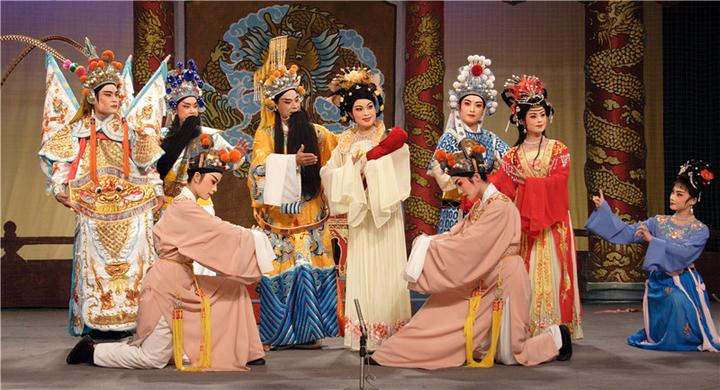

潮剧，又名潮州戏、潮音戏、泉潮雅调、白字戏， 闽南语系剧种之一。流传于广东省汕头市、潮州市、揭阳市、福建省漳州市南部的传统戏剧，国家级非物质文化遗产。 潮剧是用潮州方言（漳州南部用闽南方言）演唱的一个古老的地方戏曲剧种，是宋元南戏的一个分支，吸收了弋阳、昆曲、皮黄、梆子戏的特长，结合本地民间艺术，如潮州音乐等，最终形成自己独特的艺术形式和风格。潮剧传统剧目分宋元南戏和明清传奇、文明戏和新编历史剧两大类，有剧目两千多个。潮剧距今已有400多年历史，是中国古老戏曲存活于舞台的生动例证，是中华民族优秀文化表现形式的代表之一，具有深刻的历史意义和较高的审美价值.

潮剧
Teochew opera
Teochew opera